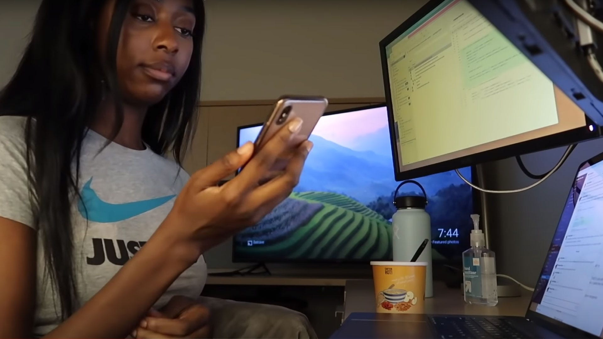
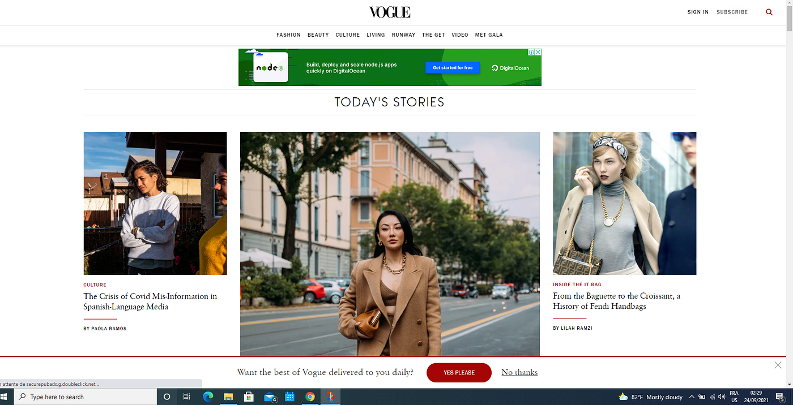
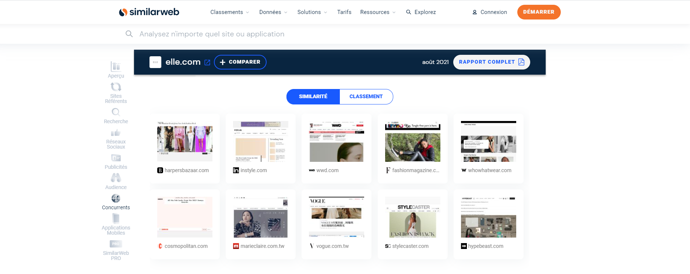
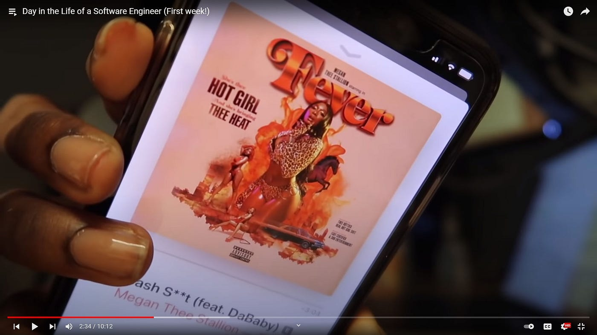

Gendered Search Engine
Because Girls & Women like Mbenda have specific curiosity & interest


If there are kinds of bags, shoes, and clothes for women and for men then it could exist content especially for men and content especially for women what could lead to a specific search engine for men and a specific search engine for women. What I am trying to describe is not about separation of genre because men are men and women are women while we all are human beings but seeing and tasting things differently is just a natural behavior that transcends genders all the way up to the individuals that we are. I was able to break this thinking down to the level of personal search engine an idea that interests me and which is at the edge of personalization of online content. This is about showing possibilities of building new tech-enabled experiences on top of old ones with the theory of the minimum viable audience and the purpose of promoting diversity like what flagged … a tech-enabled idea that I have not still disclosed here is about. There are websites that have women as an audience. For example, these websites below are specially targeted at women and it is very likely that most of their visitors are women then the webpages that these websites are linking to are very likely to be more interesting to women than men but do you think that search engines’ algorithms are actually designed to take into consideration this likelihood for suggesting to men and women content that fit better their needs. I don't know but I am sure that for displaying targeted advertising they are good at identifying and displaying ads that are more likely to be clicked by men or ads that are more likely to be clicked by women


Like how I have done when I was highlighting this system for editing creative videos like those of Mbenda Ndour with anime illustrations easily incrusted with the help of a smart AI video editor assistant in this article titled search engine for mbenda, I will try to explain some technical building block of this gendered search engine I am writing about and this tech-enabled idea could be an example included into this book about diversity in tech that I am writing actually (in fact I have not touched this book project since I reached 23 pages months ago)
Building this kind of gendered search engine will be more about classifying web content by the composition of their audience in terms of gender. It is obvious that a website that has 90% of its audience made of women like mbenda is a women's website, I mean a website that cares about women and specifically targets women. You could guess that if this kind of website links to another website this like will not have the same score and weighting as a website with 10% of women visitors. Then the ranking algorithm of this gendered search engine that I am proposing will be different from the ranking algorithm of actual search engines because it will take into account the
You are smart enough to see how machine learning will help build this search engine because as it will be a question of classifying content according to a specific feature but as with every kind of machine learning model some manual classification will be needed. For example, you will gonna have to identify some women's websites and reference them manually, and configure your spiders to start from those women's websites for indexing the whole web. The content of these preselected websites will be the inputs of a Natural language processing system that will process them and will help identify if the next websites to be processed are like them, I mean built for women. Websites like vogue that I have presented in the paragraph above will be of interest like every website about fashion and apparel because those are websites with more women like mbenda as visitors.
I could give more technical detail about how this gendered search engine will be implemented but it is sure that all the features that I am thinking about can not be covered with this article only then It would be better to write about them in my coming article and this will be an opportunity again to write about Mbenda and to publish another article for this experiment called the greyio heart Experimen that I am thinking about rebranding it with the Grateful heart Experiment as a name because When I wrote an article about the great work that women like mbenda are doing in tech and the happy life that I am wishing them, they often notice it in Twitter and react like this on Twitter
and she notices it and reacts gratefully by telling me this on Twitter
to end this article by staying on the topic of search engines and diversity of gender, you should be able to notice that a smart search engine should know that I care about Mbenda and She also is kind to me because of this comment posted on Twitter and because this is a signal of a clear connection between two real human beings, each one somewhere in the world but linked with kilometers of optic fiber thought the magical power of the internet a medium that just disrupted distance and space connecting me with people like you and mbenda who are famous in their space
A good gendered search engine also should have eyes by leveraging the power of openCv to know more about what matters to people like Mbenda by using just this picture below as input.

This is a project you can build it and I will be giving more details about it here in my medium profile as well as for this anime search engine for Mbenda
PS: In this article, I have used the name and picture of Mbenda and I should tell you that I have not asked permission from her but I am guessing that she agrees that I act like that because sometimes I am getting messages from people who ask me to change the picture like this
I am not an interruption marketer but an advocate of permission marketing and these article about the people and organization I am writing are not marketing-driven but rather done on purpose with the goal of highlight the work and talent of people that I think are worth highlighting.